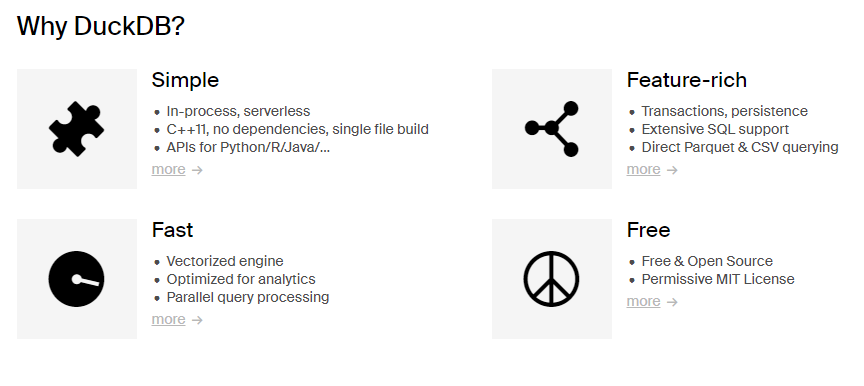

Polars, DuckDB and RAPIDS
Georgetown University
Fall 2025
Pandas: pandas is a fast, powerful, flexible and easy to use open source data analysis and manipulation tool, built on top of the Python programming language.
Apache Arrow and the “10 Things I Hate About pandas” (A 2017 post from the creator of Pandas..)
50 times faster data loading for Pandas: no problem (but this is an old 2019 article..)
Polars: Lightning-fast DataFrame library for Rust and Python
Why is it faster than Pandas?
Written in Rust (compiled not interpreted).
Uses all available cores of your machine.
Use PyArrow.
[My opinion] Makes it easier to write code the right away (has a strict schema and others)!
Install polars via pip.
Import polars in your Python code as
Read data as usual.
https://pola-rs.github.io/polars-book/user-guide/coming_from_pandas.html
https://pola-rs.github.io/polars-book/user-guide/coming_from_spark.html
DuckDB is an in-process SQL OLAP database management system
Duck DB
Also checkout MotherDuck
Duck DB
RAPIDS is a suite of open-source software libraries and APIs for executing data science pipelines entirely on GPUs—and can reduce training times from days to minutes. Built on NVIDIA® CUDA-X AI™, RAPIDS unites years of development in graphics, machine learning, deep learning, high-performance computing (HPC), and more.
https://www.nvidia.com/en-us/deep-learning-ai/software/rapids